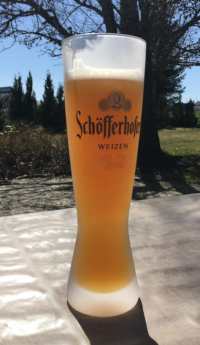

Meine Portfolio Seite
Neben meine Arbeiten finden Sie hier auch Infos zu meiner Person und Kontaktdaten
Neben meine Arbeiten finden Sie hier auch Infos zu meiner Person und Kontaktdaten
Hier sind einge meiner Arbeiten, die ich privat in der Freizeit oder im Rahmen meines Studiums an der HFU in der Fakultät "Digitale Medien" im Studiengang MIB gemacht habe.
Zusammen mit meinen Freunden bauen wir gerade eine Terrasse, damit wir, im Sommer und nach der Pandemie, zusammen das eine oder andere bier trinken können
Musik zur Motivation, wenn mal alles weh tut, ist notwendig. Die meiste Zeit hören wir Rap oder Bands wie "Rammstein".
... und nach, vor und während der Arbeit
In unserer Gruppe haben wir die Gründung der Firma "AntiNOISE" durchgespielt.
Zusammen mit Zara Kocak und Immanuel Leinert haben wir die "Optik des menschlichen Auges" erötert
Beispiele mit Blender